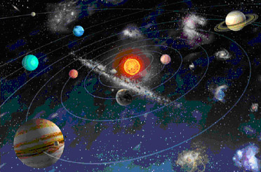

Galaxias

Una galaxia (del griego γαλαξίας ‘lácteo’) es un conjunto de estrellas, nubes de gas, planetas, polvo cósmico, materia oscura y energía unidas gravitatoriamente en una estructura más o menos definida. La palabra «galaxia» procede de los griegos, los cuales atribuían el origen de la Vía Láctea a las gotas de leche derramadas en el universo por la diosa Hera mientras alimentaba al infante Hércules. La cantidad de estrellas que forman una galaxia es enorme y varía desde las galaxias enanas, con 107, hasta las galaxias gigantes, con 1014 estrellas. Formando parte de una galaxia existen subestructuras como las nebulosas, los cúmulos estelares y los sistemas estelares múltiples.
Históricamente, las galaxias se han clasificado de acuerdo a su forma aparente (morfología visual). Una forma común es la galaxia elíptica que, como lo indica su nombre, tiene el perfil luminoso de una elipse. Las galaxias espirales tienen forma circular, pero con estructura de brazos curvos envueltos en polvo. Las galaxias inusuales se llaman galaxias irregulares y son, normalmente, el resultado de perturbaciones provocadas por la atracción gravitacional de galaxias vecinas. Estas interacciones entre galaxias vecinas, que pueden provocar la fusión de galaxias, pueden inducir el intenso nacimiento de estrellas. Finalmente, tenemos las galaxias pequeñas, que carecen de una estructura coherente y también se las llama galaxias irregulares.
Las galaxias están distribuidas por todo el universo y presentan características muy diversas, tanto en lo que respecta a su configuración como a su antigüedad. Las más pequeñas abarcan alrededor de 3000 millones de estrellas, y las galaxias de mayor tamaño pueden llegar a abarcar más de un billón de astros. Estas últimas pueden tener un diámetro de 170 000 años luz, mientras que las primeras no suelen exceder de los 6000 años luz.
A veces las galaxias se acercan demasiado y chocan entre sí. La Vía Láctea algún día colisionará con Andrómeda, su vecina galáctica más cercana. La Colisión Vía Láctea-Andrómeda tendrá lugar dentro de cinco mil millones de años, dando lugar a una galaxia que probablemente será de tipo espiral llamada Lactómeda. Las galaxias son tan grandes y están tan expandidas en los extremos que, aunque se choquen entre sí, los planetas y los sistemas solares a menudo no llegan a colisionar.
Los planetas
Los planetas son cuerpos que giran en torno a una estrella y que, según la definición de la Unión Astronómica Internacional, deben cumplir además la condición de haber limpiado su órbita de otros cuerpos rocosos importantes, y de tener suficiente masa como para que su fuerza de gravedad genere un cuerpo esférico. En el caso de cuerpos que orbitan alrededor de una estrella que no cumplan estas características, se habla de planetas enanos, planetesimales, o asteroides. En nuestro Sistema Solar hay 8 planetas: Mercurio, Venus, Tierra, Marte, Júpiter, Saturno, Urano y Neptuno, considerándose desde 2006 a Plutón como un planeta enano. A finales de 2009, fuera de nuestro sistema solar se habían detectado más de 400 planetas extrasolares, pero los avances tecnológicos están permitiendo que este número crezca a buen ritmo.
Los siete planetas clásicos son los que fácilmente se puede ver a simple vista y por lo tanto eran conocidos por los antiguos astrólogos antes de la llegada del telescopio. Son el Sol, la Luna, Mercurio, Venus, Marte, Júpiter y Saturno (como se mencionó anteriormente, el sol y la luna fueron considerados por los antiguos como planetas). A veces, el sol y la luna fueron referidos como "las luces" o las "luminarias". Ceres y Urano también pueden ser vistos a simple vista, aunque la cultura antigua no parece haber tomado nota de ellos. La descripción astrológica adjunta a los siete planetas clásicos se han conservado desde tiempos antiguos.
Los astrólogos llaman a los siete planetas clásicos los siete planetas personales y sociales, porque se dice que representan los impulsos humanos básicos de cada individuo. Los planetas personales son el Sol, la Luna, Mercurio, Venus y Marte. Júpiter y Saturno son a menudo llamados planetas "sociales", ya que representan una transición de los planetas interiores personales a la esfera exterior. Los planetas exteriores modernos Urano, Neptuno y Plutón se denominan a menudo los planetas colectivos o trascendentales, aunque también se denominan "transpersonales". Las siguientes son las características de cada uno de los siete planetas clásicos.